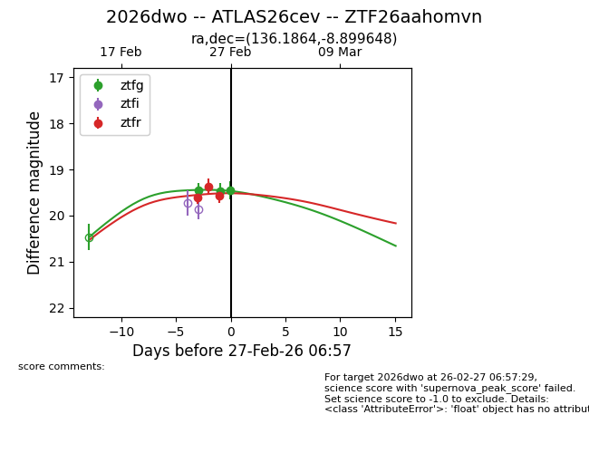
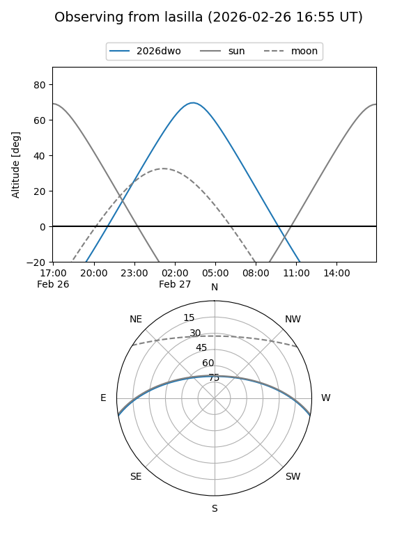
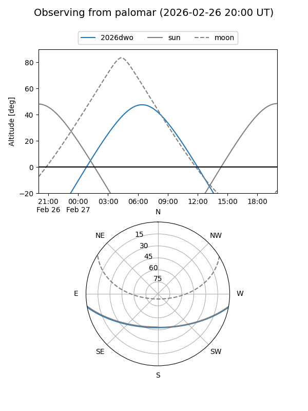
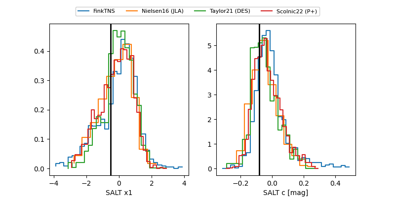

2026dwo
Target 2026dwo at 2026-02-27 06:58
Aliases and brokers:
FINK: link
Lasair: link
ALeRCE: link
TNS: link
YSE: link
alt names
ZTF26aahomvn (ztf,fink_ztf)
2026dwo (tns,yse)
ATLAS26cev (atlas)
Coordinates:
equatorial (ra, dec) = 136.1864,-8.89965
equatorial (HMS+DMS) = 09:04:44.73,-08:53:58.73
galactic (l, b) = (237.9468,+24.36469)
Flags:
Photometry:
last ztfg=19.45, ztfr=19.56
3 ztfg, 3 ztfr detections
Lightcurve

Visibility


Additional plots
